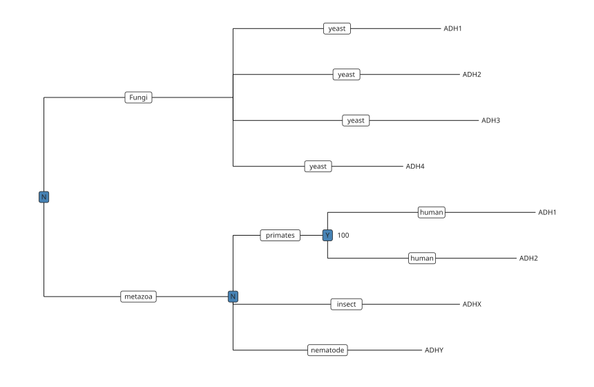
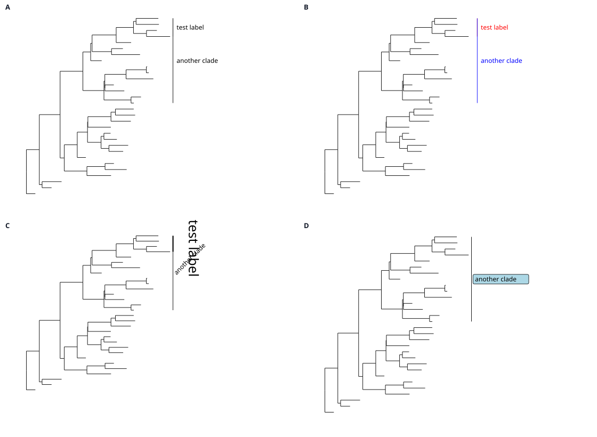
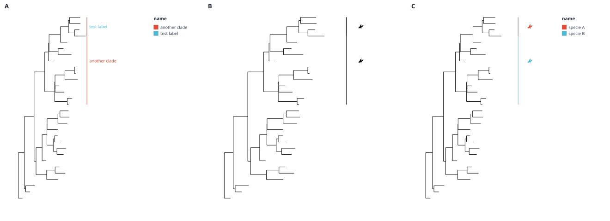
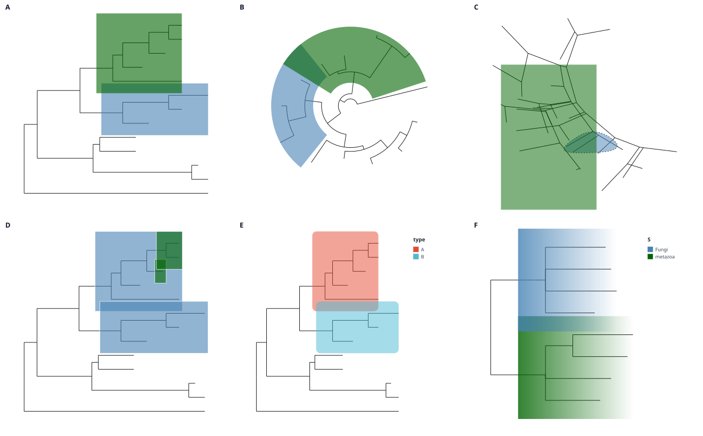
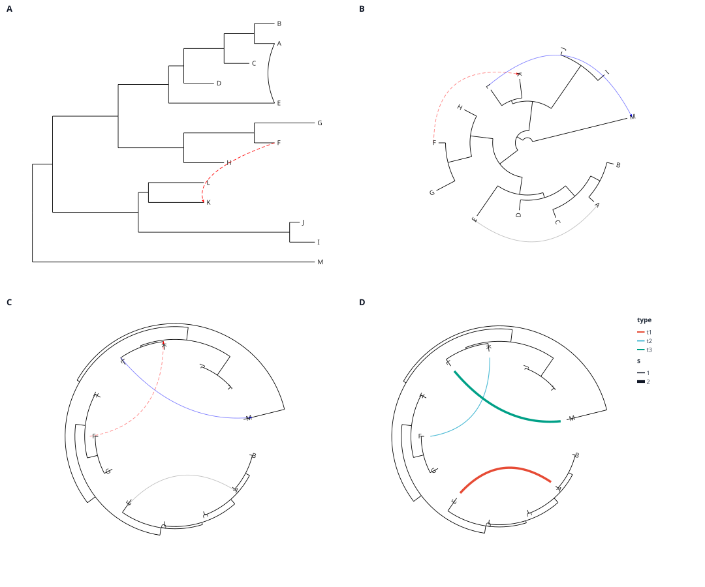
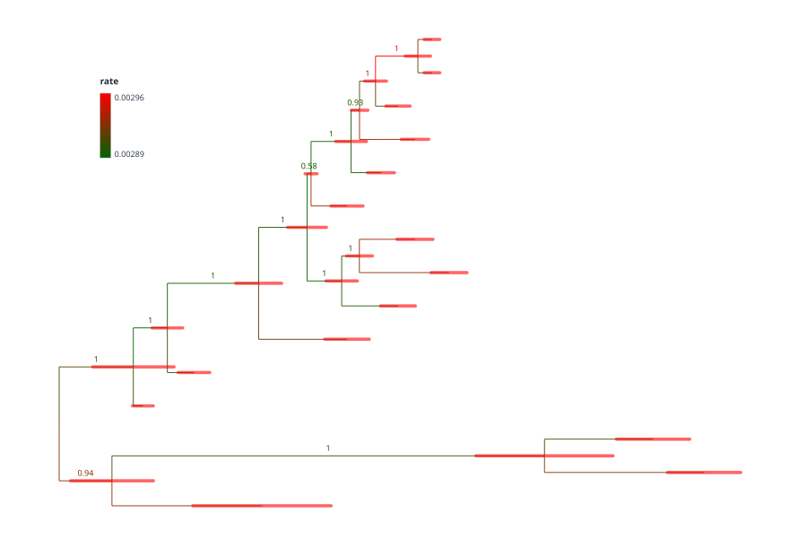
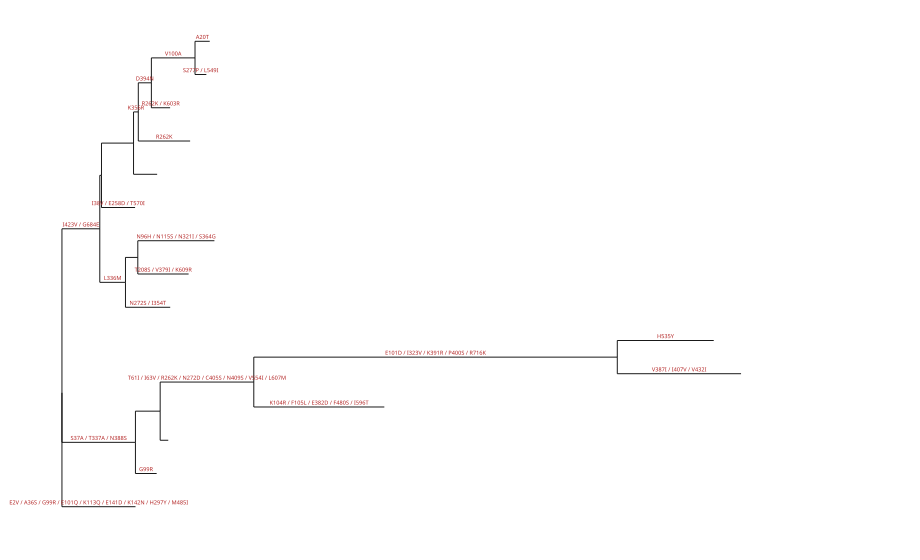

5. Phylogenetic Tree Annotation
Publication-quality phylogenies layer NHX attributes, clade brackets, shaded highlights, taxa links, uncertainty bars, and molecular selection statistics directly onto layout coordinates.
5.1 Manipulating Tree Annotation with Grammar of Graphics
All tree metadata columns (such as NHX species tags S, duplication flags D, and bootstrap values B) bind directly to geom_tiplab(), geom_label(), and geom_text() layers using midpoint coordinates (x='branch').

▶ Show / Hide Python Code read_nhxggtreegeom_tiplabgeom_label
from ggtree import aes, geom_label, geom_text, geom_tiplab, ggtree, read_nhx
treetext = (
"(((ADH2:0.1[&&NHX:S=human], ADH1:0.11[&&NHX:S=human]):"
"0.05[&&NHX:S=primates:D=Y:B=100],ADHY:"
"0.1[&&NHX:S=nematode],ADHX:0.12[&&NHX:S=insect]):"
"0.1[&&NHX:S=metazoa:D=N],(ADH4:0.09[&&NHX:S=yeast],"
"ADH3:0.13[&&NHX:S=yeast], ADH2:0.12[&&NHX:S=yeast],"
"ADH1:0.11[&&NHX:S=yeast]):0.1[&&NHX:S=Fungi])[&&NHX:D=N];"
)
tree = read_nhx(text=treetext)
return (
ggtree(tree)
+ geom_tiplab()
+ geom_label(aes(x="branch", label="S"), fill="lightgreen")
+ geom_label(aes(label="D"), fill="steelblue")
+ geom_text(aes(label="B"), hjust=-0.5)
)
5.2.1–5.2.2 Labeling Clades and Associated Taxa
geom_cladelab() places aligned bars, rotated text, boxed labels, or organism silhouettes (geom='phylopic') beside monophyletic clades, while geom_strip() spans arbitrary taxa pairs.

▶ Show / Hide Python Code ggtreegeom_cladelabxlimplot_list
from ggtree import geom_cladelab, ggtree, plot_list, rtree, set_seed, xlim
set_seed(2015 - 12 - 21)
tree = rtree(30)
p = ggtree(tree) + xlim(None, 8)
p1 = (
p
+ geom_cladelab(node=45, label="test label")
+ geom_cladelab(node=34, label="another clade")
)
p2 = (
p
+ geom_cladelab(node=45, label="test label", align=True, offset=0.2, textcolor="red", barcolor="red")
+ geom_cladelab(node=34, label="another clade", align=True, offset=0.2, textcolor="blue", barcolor="blue")
)
p3 = (
p
+ geom_cladelab(
node=45,
label="test label",
align=True,
angle=270,
hjust="center",
offset_text=0.5,
barsize=1.5,
fontsize=8,
)
+ geom_cladelab(node=34, label="another clade", align=True, angle=45)
)
p4 = p + geom_cladelab(node=34, label="another clade", align=True, geom="label", fill="lightblue")
plot_list(p1, p2, p3, p4, ncol=2, tag_levels="A")

▶ Show / Hide Python Code DataFramegeom_cladelabaesggtree
from ggtree import DataFrame, aes, geom_cladelab, ggtree, plot_list, rtree, set_seed, xlim
set_seed(2015 - 12 - 21)
tree = rtree(30)
p = ggtree(tree) + xlim(None, 8)
dat = DataFrame({"node": [45, 34], "name": ["test label", "another clade"]})
p1 = p + geom_cladelab(
data=dat,
mapping=aes(node="node", label="name", color="name"),
fontsize=3,
)
dt = DataFrame(
{
"node": [45, 34],
"image": [
"7fb9bea8-e758-4986-afb2-95a2c3bf983d",
"0174801d-15a6-4668-bfe0-4c421fbe51e8",
],
"name": ["specie A", "specie B"],
}
)
p2 = p + geom_cladelab(
data=dt,
mapping=aes(node="node", label="name", image="image"),
geom="phylopic",
imagecolor="black",
offset=1,
offset_text=0.5,
)
p3 = p + geom_cladelab(
data=dt,
mapping=aes(node="node", label="name", image="image", color="name"),
geom="phylopic",
offset=1,
offset_text=0.5,
)
plot_list(p1, p2, p3, ncol=3, tag_levels="A")

▶ Show / Hide Python Code ggtreegeom_cladelabgeom_stripgeom_tiplab
from ggtree import (
geom_cladelab,
geom_strip,
geom_tiplab,
ggtree,
plot_list,
rtree,
set_seed,
xlim,
)
set_seed(2015 - 12 - 21)
tree = rtree(30)
p = ggtree(tree) + xlim(None, 8)
p1 = (
ggtree(tree, layout="daylight")
+ geom_cladelab(node=35, label="test label", angle=0, fontsize=8, offset=0.5, vjust=0.5)
+ geom_cladelab(node=55, label="another clade", angle=-95, hjust=0.5, fontsize=8)
)
p2 = (
p
+ geom_tiplab()
+ geom_strip("t10", "t30", barsize=2, color="red", label="associated taxa", offset_text=0.1)
+ geom_strip("t1", "t18", barsize=2, color="blue", label="another label", offset_text=0.1)
)
plot_list(p1, p2, ncol=2, tag_levels="A")
5.2.3–5.2.4 Highlighting Clades and Linking Related Taxa
Shade monophyletic groups across rectangular, circular, and unrooted layouts with geom_hilight() (rect, roundrect, encircle, gradient) and geom_balance(), and connect evolutionary partners using curved arrows from geom_taxalink().

▶ Show / Hide Python Code ggtreegeom_hilightgeom_balanceread_nhx
from ggtree import (
DataFrame,
aes,
geom_balance,
geom_hilight,
ggtree,
plot_list,
read_nhx,
read_tree,
rtree,
scale_fill_manual,
set_seed,
system_file,
)
nwk = system_file("extdata", "sample.nwk")
tree = read_tree(nwk)
p1 = (
ggtree(tree)
+ geom_hilight(node=21, fill="steelblue", alpha=0.6)
+ geom_hilight(node=17, fill="darkgreen", alpha=0.6)
)
p2 = (
ggtree(tree, layout="circular")
+ geom_hilight(node=21, fill="steelblue", alpha=0.6)
+ geom_hilight(node=23, fill="darkgreen", alpha=0.6)
)
set_seed(2015 - 12 - 21)
pg = ggtree(rtree(30), layout="daylight")
p3 = (
pg
+ geom_hilight(node=55, linetype=3)
+ geom_hilight(node=35, fill="darkgreen", type="rect")
)
p4 = (
ggtree(tree)
+ geom_balance(node=16, fill="steelblue", color="white", alpha=0.6, extend=1)
+ geom_balance(node=19, fill="darkgreen", color="white", alpha=0.6, extend=1)
)
d = DataFrame({"node": [17, 21], "type": ["A", "B"]})
p5 = ggtree(tree) + geom_hilight(data=d, mapping=aes(node="node", fill="type"), type="roundrect")
x = read_nhx(system_file("extdata", "NHX", "ADH.nhx"))
p6 = (
ggtree(x)
+ geom_hilight(
mapping=aes(subset="node in (10, 12)", fill="S"),
type="gradient",
gradient_direction="rt",
alpha=0.8,
)
+ scale_fill_manual(values=["steelblue", "darkgreen"])
)
plot_list(p1, p2, p3, p4, p5, p6, ncol=3, tag_levels="A")

▶ Show / Hide Python Code ggtreegeom_taxalinkgeom_tiplabscale_size_continuous
from ggtree import (
DataFrame,
aes,
geom_taxalink,
geom_tiplab,
ggtree,
plot_list,
read_tree,
scale_size_continuous,
system_file,
)
tree = read_tree(system_file("extdata", "sample.nwk"))
p1 = (
ggtree(tree)
+ geom_tiplab()
+ geom_taxalink(taxa1="A", taxa2="E")
+ geom_taxalink(taxa1="F", taxa2="K", color="red", linetype="dashed", arrow=True)
)
p2 = (
ggtree(tree, layout="circular")
+ geom_taxalink(taxa1="A", taxa2="E", color="grey", alpha=0.5, offset=0.05, arrow=True)
+ geom_taxalink(taxa1="F", taxa2="K", color="red", linetype="dashed", alpha=0.5, offset=0.05, arrow=True)
+ geom_taxalink(taxa1="L", taxa2="M", color="blue", alpha=0.5, offset=0.05, hratio=0.8, arrow=True)
+ geom_tiplab()
)
p3 = (
ggtree(tree, layout="inward_circular", xlim=150)
+ geom_taxalink(taxa1="A", taxa2="E", color="grey", alpha=0.5, offset=-0.2, outward=False, arrow=True)
+ geom_taxalink(taxa1="F", taxa2="K", color="red", linetype="dashed", alpha=0.5, offset=-0.2, outward=False, arrow=True)
+ geom_taxalink(taxa1="L", taxa2="M", color="blue", alpha=0.5, offset=-0.2, outward=False, arrow=True)
+ geom_tiplab(hjust=1)
)
dat = DataFrame(
{
"from": ["A", "F", "L"],
"to": ["E", "K", "M"],
"h": [1, 1, 0.1],
"type": ["t1", "t2", "t3"],
"s": [2, 1, 2],
}
)
p4 = (
ggtree(tree, layout="inward_circular", xlim=(150, 0))
+ geom_taxalink(
data=dat,
mapping=aes(taxa1="from", taxa2="to", color="type", size="s"),
offset=0.15,
)
+ geom_tiplab(hjust=1)
+ scale_size_continuous(range=(1, 3))
)
plot_list(p1, p2, p3, p4, ncol=2, tag_levels="A")
5.2.5–5.3 Evolutionary Uncertainty Intervals and Software Annotations
Overlay Bayesian or RelTime confidence intervals via geom_range() + scale_x_range(), and display BEAST, HyPhy, and CODEML amino-acid substitutions and dN/dS ratios directly on branches.

▶ Show / Hide Python Code read_megaggtreegeom_rangescale_x_range
from ggtree import (
geom_range,
ggtree,
plot_list,
read_mega,
scale_x_range,
system_file,
theme_tree2,
)
megafile = system_file("extdata", "MEGA7", "mtCDNA_timetree.nex")
x = read_mega(megafile)
p1 = ggtree(x) + geom_range("reltime_0.95_CI", color="red", size=3, alpha=0.3)
p2 = ggtree(x) + geom_range("reltime_0.95_CI", color="red", size=3, alpha=0.3, center="reltime")
p3 = p2 + scale_x_range() + theme_tree2()
plot_list(p1, p2, p3, ncol=3, tag_levels="A")

▶ Show / Hide Python Code read_beastggtreegeom_rangegeom_nodelab
from ggtree import (
aes,
geom_nodelab,
geom_range,
ggtree,
read_beast,
scale_color_continuous,
system_file,
theme,
)
beast_file = system_file("extdata", "BEAST", "beast_mcc.tree")
beast = read_beast(beast_file)
return (
ggtree(beast, aes(color="rate"))
+ geom_range(range="length_0.95_HPD", color="red", alpha=0.6, size=2)
+ geom_nodelab(aes(x="branch", label="round(posterior, 2)"), vjust=-0.5, size=3)
+ scale_color_continuous(low="darkgreen", high="red")
+ theme(legend_position=(0.1, 0.8))
)

▶ Show / Hide Python Code read_hyphyggtreegeom_textaes
from ggtree import aes, geom_text, ggtree, read_hyphy, system_file
nwk = system_file("extdata", "HYPHY", "labelledtree.tree")
ancseq = system_file("extdata", "HYPHY", "ancseq.nex")
tipfas = system_file("extdata", "pa.fas")
hy = read_hyphy(nwk, ancseq, tipfas)
return ggtree(hy) + geom_text(
aes(x="branch", label="AA_subs"),
size=2,
vjust=-0.3,
color="firebrick",
)

▶ Show / Hide Python Code read_codemlggtreescale_color_continuoussquish
from ggtree import (
aes,
geom_text,
ggtree,
read_codeml,
scale_color_continuous,
squish,
system_file,
theme_tree2,
)
rstfile = system_file("extdata", "treeio", "PAML_Codeml", "rst")
mlcfile = system_file("extdata", "treeio", "PAML_Codeml", "mlc")
ml = read_codeml(rstfile, mlcfile)
return (
ggtree(ml, aes(color="dN_vs_dS"), branch_length="dN_vs_dS")
+ scale_color_continuous(
name="dN/dS",
limits=(0, 1.5),
oob=squish,
low="darkgreen",
high="red",
)
+ geom_text(aes(x="branch", label="AA_subs"), vjust=-0.5, color="steelblue", size=2)
+ theme_tree2(legend_position=(0.9, 0.3))
)